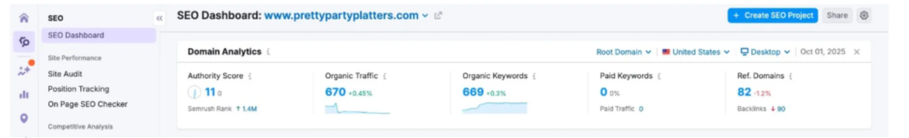
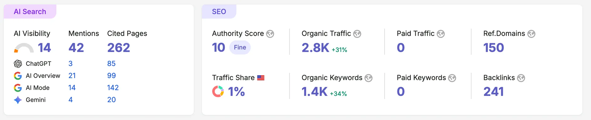

2.8K
Monthly organic visits, from 670
1.4K
Keywords ranking, from 669
262
Pages cited by AI assistants
241
Backlinks, from 90
150
Referring domains, from 82


Objective
Pretty Party Platters was already ranking for a reasonable spread of keywords and getting steady traffic, which is a more common starting point than a dead site and a harder one to improve. The October 2025 audit found the problem was not visibility but quality: 669 keywords ranking, only about 670 visits a month, and almost none of those keywords attached to anything a customer would buy. Of 45 pages crawled, 2 were healthy and 41 had issues.
Strategy
- Clear the technical debt first: 4 errors, 402 warnings and 66 notices, plus robots.txt, redirects and crawl depth.
- Keyword research aimed at buying intent rather than volume, because the existing rankings were already proving that traffic without intent goes nowhere.
- A blog structure and a repeatable production process, so publishing did not depend on a person having a free afternoon.
- Competitor audit, since the audit showed rivals typically carrying 200+ referring domains against this site's 82.
- Local business schema, so the search engines could read what the business is and where it serves.
- Microsoft Clarity, to see what visitors actually did once the traffic arrived.
Execution
The technical pass came first for the usual reason: 41 of 45 crawled pages carrying issues puts a ceiling on everything else. But the more interesting work was the content, because this site had the opposite of the usual problem. It already ranked. It ranked for the wrong things. Rewriting the target list around what a person ordering platters for an event actually types is what moved the traffic, not adding volume for its own sake.
Organic traffic went from roughly 670 visits a month to 2,800, about 4.2 times. Keywords ranking went from 669 to 1,400. Referring domains went from 82 to 150 and backlinks from 90 to 241, against an audit that had flagged the link profile as the single biggest gap.
The result I did not forecast is the AI one. Semrush now reports 262 pages of the site cited across AI assistants, split ChatGPT 85, Google AI Overviews 99, AI Mode 142 and Gemini 20, with 42 mentions. The audit had noted the site's AI Search Health was already 92%, a strong technical baseline, and that what it lacked was authority and content. Adding those two appears to be what turned a technically eligible site into a cited one.
What the numbers show
A 4.2x traffic increase on a site that was already ranking is a different achievement from the same multiple on a site starting at zero. There was no burst of easy wins waiting behind a technical fix here. The gain came from replacing the keyword target list, which is slower and less dramatic month to month, and it is the reason this took ten months rather than three.
The 262 cited pages is the number I would point at. Every other case study on this site demonstrates ranking in Google. This one demonstrates being used as a source by four different AI assistants, on a domain with an authority score of 10. That is worth knowing precisely because it suggests citation is not gated behind domain authority the way ranking is.
What I'd flag
The authority score went down, not up. It was 11 at the audit and is 10 now. The audit set an explicit goal of improving it from 11 within six months, and that goal was missed. Referring domains nearly doubled over the same period, which tells you the score is weighing link quality rather than count. This is the clearest failure on the page and I would rather state it than leave it out of the metrics.
The +31% and +34% on the screenshot are Semrush's own period-over-period deltas, not the change since the audit. The change since the audit is the 670 to 2,800 and 669 to 1,400 comparison, measured between the two screenshots above.
"Pages cited by AI" is a Semrush metric. It counts pages the tool observed being referenced. It is a real and useful signal, and it is not a guarantee of ongoing citation, which can move without warning as models update.
There is no revenue figure here. Traffic and citations are not sales. I do not have order data for this account, so I have not implied any.
Where these numbers come from
The before figures are from the website audit report dated 3 October 2025 for www.prettypartyplatters.com, with the underlying Semrush dashboard dated 1 October 2025. The after figures are the current Semrush account view, United States, root domain. Both screenshots are above.
This is SEO consulting on a site that already ranked. For the opposite starting point, see Hills Harvest, which began at 39 visits a month.
Ranking, but not selling?
A site can rank for hundreds of keywords and still not bring in customers, which usually means the target list is wrong rather than the SEO. Send me the site and I will tell you which it is. No cost.
Get a free audit